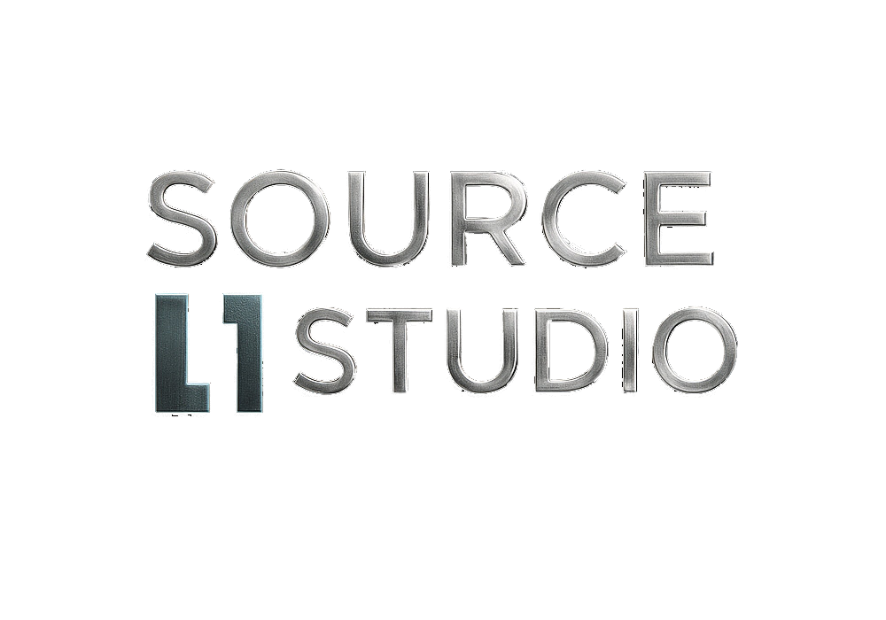

STEM, AI literacy, school workshops, educator training, and future-skills programs.
Portfolio
A body of work across STEM learning, story worlds, AI, and creative technology.
My portfolio brings together the work I am known for: education programs, children's publishing, animation, AI learning, STEM mentorship, and visual systems built for real audiences.

International Reach
Education + AI + Creative Tech


Children's book worlds through Tale Whims, with author and publisher services delivered through Source II Studio.
Websites, design systems, AI automations, and branded content for founders and organizations.
Selected Portfolio
Work grouped by what clients, schools, authors, and partners need to see first.
Each category shows the type of outcome I help create: stronger learning experiences, more beautiful books, clearer digital systems, and confident public-facing education work.

Education
Education Programs
Workshops, teacher training, classroom innovation, learner engagement, and practical digital learning experiences for young people and educators.
- STEM and future-skills learning
- Educator training and mentoring
- School-ready workshop delivery

Source II Studio
Children's Books
Author and publisher support through Source II Studio across illustration, character design, book formatting, visual identity, and launch-ready publishing assets.
- Characters and story worlds
- Illustration and layout support
- Book trailers and visual campaigns

AI + Education
AI Projects
AI literacy, responsible tool use, educator workflows, content systems, and practical automation ideas for schools and creative businesses.
- AI learning sessions
- Teacher workflow modernization
- Creative automation strategy
Illustration
Visual storytelling, educational illustration, character-led artwork, and publishing visuals designed to feel warm, clear, and memorable.
Animation
Book trailers, motion graphics, explainers, classroom visuals, and campaign-ready animated assets for story and learning brands.
Speaking
Conference sessions, workshops, mentorship, and education innovation talks on STEM, AI, creativity, and future-ready learning.
STEM
Space science, Micro:bit, coding inspiration, NASA-linked mentorship, student projects, and practical STEM confidence-building.
Creative Work
Brand visuals, creative systems, websites, AI automations, author services, digital products, and content campaigns through Source II Studio.
Global Delivery
International-facing client work, online education delivery, remote creative support, and cross-cultural learning products.